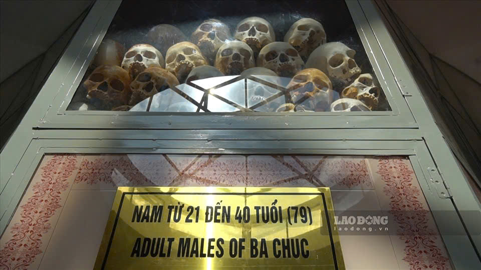
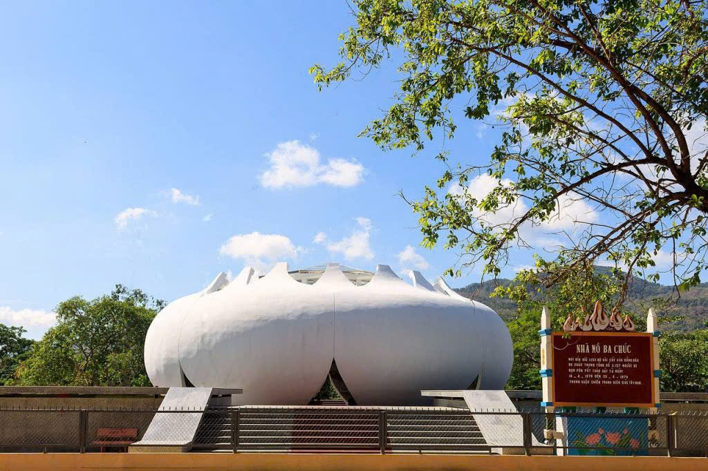
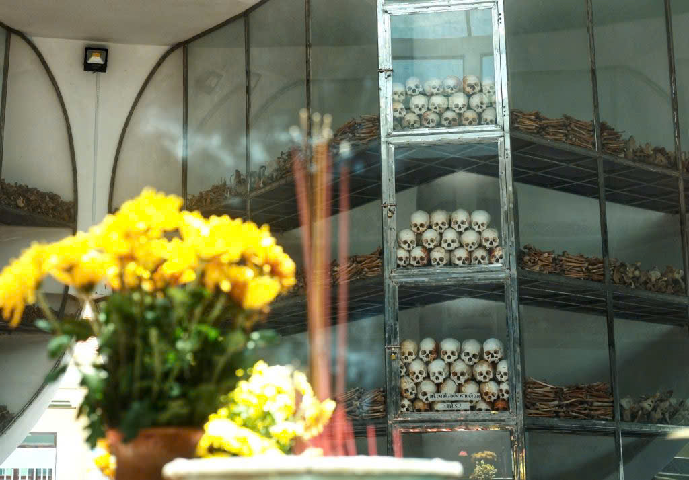
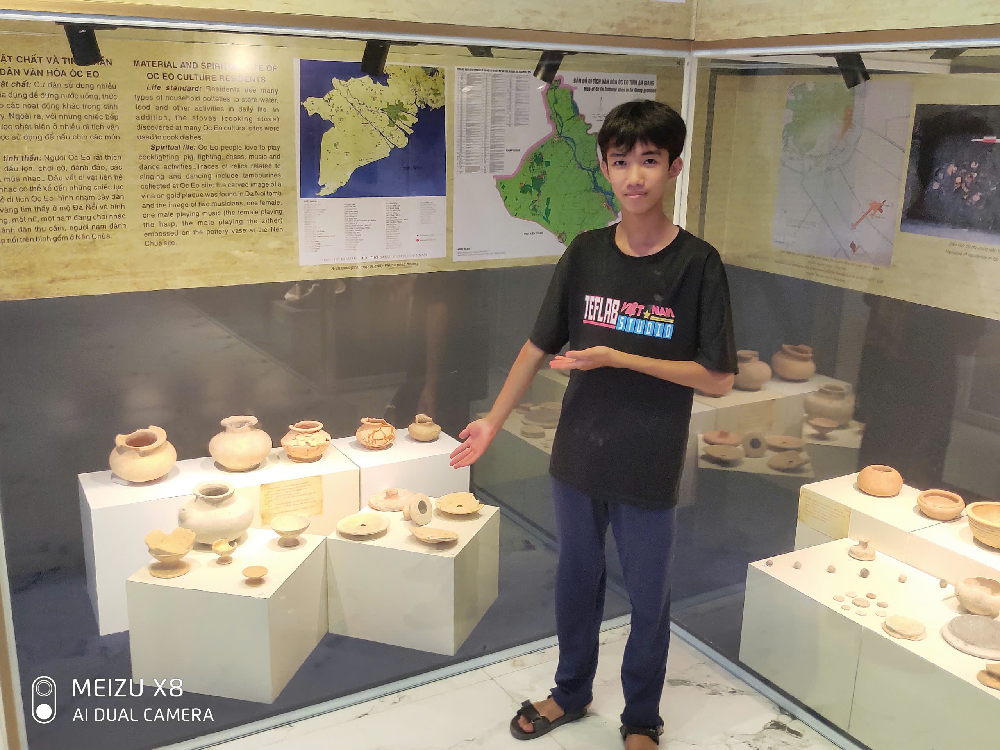
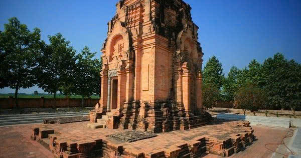
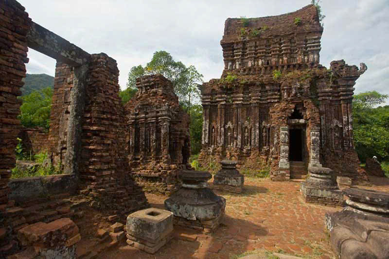

Đồi Tức Dụp là một trong những địa điểm du lịch nổi tiếng của tỉnh An Giang, thuộc huyện Tri Tôn. Nơi đây không chỉ hấp dẫn du khách bởi vẻ đẹp thiên nhiên hoang sơ mà còn mang ý nghĩa lịch sử quan trọng.
🏞 Cảnh quan thiên nhiên
Đồi Tức Dụp là một phần của núi Cô Tô, sở hữu hệ thống hang động tự nhiên, cây xanh rậm rạp, và địa hình độc đáo với nhiều khối đá xếp chồng lên nhau tạo thành các hang động kỳ thú.
Khung cảnh hùng vĩ, hoang sơ, đặc biệt thích hợp cho những ai yêu thích khám phá thiên nhiên.
🏛 Giá trị lịch sử
Trong chiến tranh chống Mỹ, Đồi Tức Dụp được mệnh danh là "ngọn đồi 2 triệu đô", bởi Mỹ đã tốn số tiền lớn để đánh chiếm nhưng vẫn thất bại.
Đây từng là căn cứ địa cách mạng quan trọng của quân dân An Giang, với hệ thống địa đạo và hang động bí mật giúp quân ta cầm cự suốt 128 ngày đêm.
Ngày nay, nơi đây có khu di tích lịch sử và bảo tàng trưng bày nhiều hiện vật, tư liệu về cuộc kháng chiến.
🎉 Hoạt động du lịch
Tham quan hang động tự nhiên: Các hang động lớn nhỏ ẩn chứa nhiều câu chuyện lịch sử.
Khám phá khu di tích lịch sử: Trải nghiệm các đường hầm, công sự, và tìm hiểu về cuộc kháng chiến oai hùng.
Cắm trại, dã ngoại: Không gian thoáng đãng, lý tưởng cho các hoạt động ngoài trời.
Chụp ảnh, check-in: Nhiều góc chụp đẹp giữa thiên nhiên hùng vĩ.
Nhà Mồ Ba Chúc là một di tích lịch sử đặc biệt nằm ở thị trấn Ba Chúc, huyện Tri Tôn, tỉnh An Giang. Đây là nơi tưởng niệm hơn 3.000 người dân vô tội bị quân Khmer Đỏ thảm sát vào năm 1978 trong cuộc chiến tranh biên giới Tây Nam.
1. Lịch sử đau thương
Vào tháng 4 năm 1978, quân Khmer Đỏ từ Campuchia tràn sang biên giới Việt Nam và gây ra cuộc thảm sát kinh hoàng tại Ba Chúc. Trong vòng 12 ngày (từ 18/4 đến 30/4/1978), hơn 3.000 người dân đã bị sát hại một cách dã man. Những người sống sót rất ít, và khu vực này trở thành minh chứng cho tội ác diệt chủng của Khmer Đỏ.
2. Kiến trúc và ý nghĩa của Nhà Mồ Ba Chúc
Nhà Mồ Ba Chúc được xây dựng để lưu giữ hài cốt của các nạn nhân trong vụ thảm sát. Hiện nay, bên trong khu tưởng niệm có một tháp kính lớn chứa hàng nghìn bộ hài cốt được sắp xếp cẩn thận. Ngoài ra, còn có các khu vực trưng bày hình ảnh, tư liệu về cuộc thảm sát và sự tàn bạo của Khmer Đỏ.
Bên cạnh nhà mồ là chùa Tam Bửu và chùa Phi Lai, những nơi từng là nơi trú ẩn của người dân Ba Chúc trong cuộc thảm sát. Cả hai ngôi chùa đều bị phá hủy gần như hoàn toàn vào thời điểm đó.
3. Điểm đến lịch sử không thể bỏ qua
Nhà Mồ Ba Chúc không chỉ là một địa điểm du lịch mà còn là nơi để người dân tưởng niệm, tri ân những người đã khuất và nhắc nhở về một giai đoạn đau thương trong lịch sử Việt Nam. Đến đây, du khách có cơ hội tìm hiểu về những mất mát mà người dân vùng biên giới Tây Nam đã trải qua, đồng thời thể hiện lòng biết ơn với những người đã hy sinh vì hòa bình hôm nay.



Khu di tích Óc Eo là một địa điểm du lịch và khảo cổ quan trọng tại tỉnh An Giang, gắn liền với nền văn hóa Óc Eo, một nền văn hóa cổ phát triển rực rỡ vào khoảng thế kỷ I - VII sau Công nguyên. Đây được xem là trung tâm của vương quốc Phù Nam cổ đại – một trong những quốc gia hùng mạnh từng tồn tại ở khu vực Đông Nam Á.
1. Lịch sử và giá trị khảo cổ
Khu di tích Óc Eo được nhà khảo cổ học người Pháp Louis Malleret phát hiện vào năm 1944. Từ đó, nhiều cuộc khai quật đã tìm thấy hàng nghìn hiện vật như: đồ gốm, trang sức, tượng đá, tiền cổ, công cụ sản xuất...
Nơi đây là minh chứng cho sự phát triển rực rỡ của nền văn hóa Óc Eo và là trung tâm giao thương sầm uất của vương quốc Phù Nam, với mối quan hệ buôn bán rộng khắp với Ấn Độ, Trung Quốc và nhiều nước Đông Nam Á khác.
Các di chỉ kiến trúc, đền tháp, hệ thống kênh rạch cổ vẫn còn lưu giữ, cho thấy trình độ phát triển cao về nông nghiệp, thủ công mỹ nghệ và thương mại của cư dân Óc Eo thời xưa.
2. Các điểm tham quan nổi bật
Di tích gò Cây Thị: Một khu vực quan trọng với dấu tích của những công trình kiến trúc tôn giáo cổ.
Di tích Nam Linh Sơn Tự: Một ngôi chùa cổ có nhiều hiện vật và tượng đá mang phong cách Óc Eo.
Di tích gò Óc Eo: Nơi phát hiện nhiều cổ vật quan trọng, phản ánh đời sống của người dân Phù Nam.
Kênh rạch cổ: Hệ thống kênh đào xưa giúp kết nối giao thương và phát triển kinh tế.
3. Hoạt động du lịch
Khám phá các di tích và tìm hiểu về nền văn hóa Óc Eo cổ đại.
Chiêm ngưỡng các hiện vật khảo cổ trưng bày tại bảo tàng.
Tham quan các địa danh tâm linh như chùa Nam Linh Sơn, miếu Bà Chúa Xứ.
Trải nghiệm cuộc sống miền quê sông nước tại An Giang.


